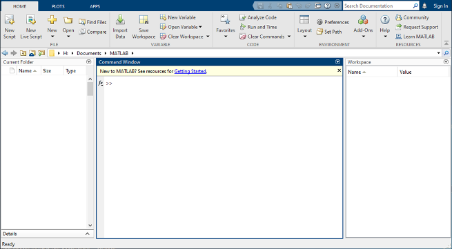
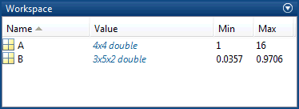
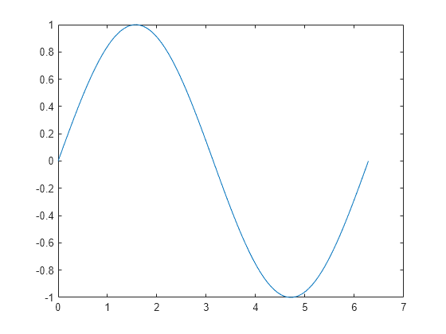
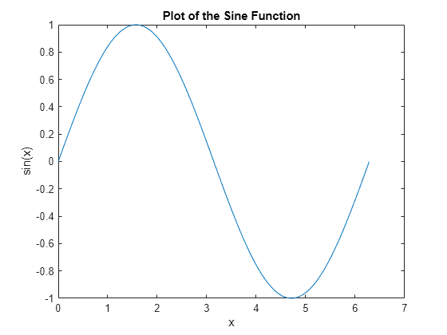
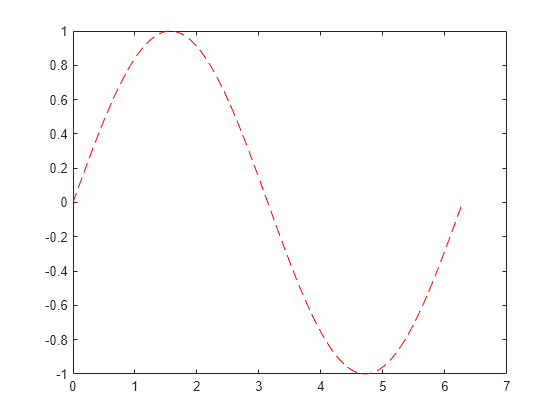
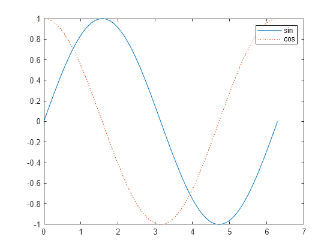
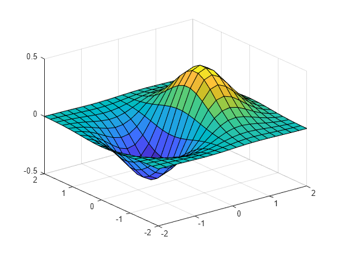
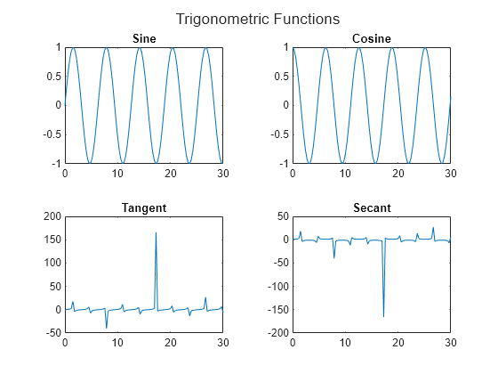
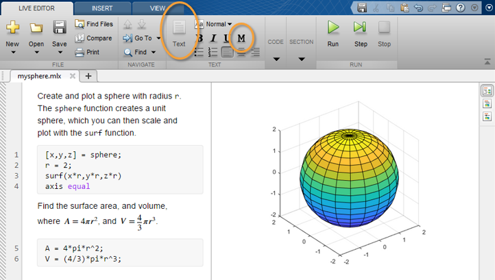

MATLAB快速入门
科学计算语言
桌面基础知识
启动 MATLAB® 时，桌面会以默认布局显示。

桌面包括下列面板：
-
当前文件夹 - 访问您的文件。
-
命令行窗口 - 在命令行中输入命令（由提示符 (
>>) 表示）。 -
工作区 - 浏览您创建或从文件导入的数据。
使用 MATLAB 时，可发出创建变量和调用函数的命令。例如，通过在命令行中键入以下语句来创建名为 a 的变量：
a = 1
MATLAB 将变量 a 添加到工作区，并在命令行窗口中显示结果。
a = 1
创建更多变量。
b = 2
b = 2
c = a + b
c = 3
d = cos(a)
d = 0.5403
如果未指定输出变量，MATLAB 将使用变量 ans（answer 的缩略形式）来存储计算结果。
sin(a)
ans = 0.8415
如果语句以分号结束，MATLAB 会执行计算，但不在命令行窗口中显示输出。
e = a*b;
按向上 (↑) 和向下箭头键 (↓) 可以重新调用以前的命令。在空白命令行中或在键入命令的前几个字符之后按箭头键。例如，要重新调用命令 b = 2，请键入 b，然后按向上箭头键。
矩阵和数组
Open in MATLAB OnlineCopy Code Copy Command
MATLAB 是“matrix laboratory”的缩写形式。MATLAB® 主要用于处理整个的矩阵和数组，而其他编程语言大多逐个处理数值。
所有 MATLAB 变量都是多维数组，与数据类型无关。矩阵是指通常用来进行线性代数运算的二维数组。
数组创建
要创建每行包含四个元素的数组，请使用逗号 (,) 或空格分隔各元素。
a = [1 2 3 4]
1 2 3 4
这种数组为行向量。
要创建包含多行的矩阵，请使用分号分隔各行。
a = [1 3 5; 2 4 6; 7 8 10]
1 3 5
2 4 6
7 8 10
您还可以用各个单独的代码行定义每行，并用换行符分隔各行。
a = [1 3 5
2 4 6
7 8 10]
1 3 5
2 4 6
7 8 10
创建矩阵的另一种方法是使用 ones、zeros 或 rand 等函数。例如，创建一个由零组成的 5×1 列向量。
z = zeros(5,1)
0
0
0
0
0
矩阵和数组运算
MATLAB 允许您使用单一的算术运算符或函数来处理矩阵中的所有值。
a + 10
11 13 15
12 14 16
17 18 20
sin(a)
0.8415 0.1411 -0.9589
0.9093 -0.7568 -0.2794
0.6570 0.9894 -0.5440
要转置矩阵，请使用单引号 (')：
a'
1 2 7
3 4 8
5 6 10
您可以使用 * 运算符执行标准矩阵乘法，这将计算行与列之间的内积。例如，确认矩阵乘以其逆矩阵可返回单位矩阵：
p = a*inv(a)
1.0000 0.0000 -0.0000
0 1.0000 -0.0000
0 0.0000 1.0000
请注意，p 不是整数值矩阵。MATLAB 将数字存储为浮点值，算术运算可以区分实际值与其浮点表示之间的细微差别。使用 format 命令可以显示更多小数位数：
format long
p = a*inv(a)
0.999999999999996 0.000000000000007 -0.000000000000002
0 1.000000000000000 -0.000000000000003
0 0.000000000000014 0.999999999999995
使用以下命令将显示内容重置为更短格式
format short
format 仅影响数字显示，而不影响 MATLAB 对数字的计算或保存方式。
要执行元素级乘法（而非矩阵乘法），请使用 .* 运算符：
p = a.*a
1 9 25
4 16 36
49 64 100
乘法、除法和幂的矩阵运算符分别具有执行元素级运算的对应数组运算符。例如，计算 a 的各个元素的三次方：
a.^3
1 27 125
8 64 216
343 512 1000
串联
串联是连接数组以便形成更大数组的过程。实际上，第一个数组是通过将其各个元素串联起来而构成的。成对的方括号 [] 即为串联运算符。
A = [a,a]
1 3 5 1 3 5
2 4 6 2 4 6
7 8 10 7 8 10
使用逗号将彼此相邻的数组串联起来称为水平串联。每个数组必须具有相同的行数。同样，如果各数组具有相同的列数，则可以使用分号垂直串联。
A = [a; a]
1 3 5
2 4 6
7 8 10
1 3 5
2 4 6
7 8 10
复数
复数包含实部和虚部，虚数单位是 -1 的平方根。
sqrt(-1)
ans = 0.0000 + 1.0000i
要表示复数的虚部，请使用 i 或 j。
c = [3+4i, 4+3j; -i, 10j]
3.0000 + 4.0000i 4.0000 + 3.0000i
0.0000 - 1.0000i 0.0000 +10.0000i
数组索引
Open in MATLAB OnlineCopy Code Copy Command
MATLAB® 中的每个变量都是一个可包含许多数字的数组。如果要访问数组的选定元素，请使用索引。
例如，假设有 4×4 矩阵 A：
A = [1 2 3 4; 5 6 7 8; 9 10 11 12; 13 14 15 16]
1 2 3 4
5 6 7 8
9 10 11 12
13 14 15 16
引用数组中的特定元素有两种方法。最常见的方法是指定行和列下标，例如
A(4,2)
ans = 14
另一种方法不太常用，但有时非常有用，即使用单一下标按顺序向下遍历每一列：
A(8)
ans = 14
使用单一下标引用数组中特定元素的方法称为线性索引。
如果尝试在赋值语句右侧引用数组外部元素，MATLAB 会引发错误。
test = A(4,5)
Index in position 2 exceeds array bounds (must not exceed 4).
不过，您可以在赋值语句左侧指定当前维外部的元素。数组大小会增大以便容纳新元素。
A(4,5) = 17
1 2 3 4 0
5 6 7 8 0
9 10 11 12 0
13 14 15 16 17
要引用多个数组元素，请使用冒号运算符，这使您可以指定一个格式为 start:end 的范围。例如，列出 A 前三行及第二列中的元素：
A(1:3,2)
2
6
10
单独的冒号（没有起始值或结束值）指定该维中的所有元素。例如，选择 A 第三行中的所有列：
A(3,:)
9 10 11 12 0
此外，冒号运算符还允许您使用较通用的格式 start:step:end 创建等间距向量值。
B = 0:10:100
如果省略中间的步骤（如 start:end 中），MATLAB 会使用默认步长值 1。
工作区变量
工作区包含在 MATLAB® 中创建或从数据文件或其他程序导入的变量。例如，下列语句在工作区中创建变量 A 和 B。
A = magic(4);
B = rand(3,5,2);
使用 whos 可以查看工作区的内容。
whos
Name Size Bytes Class Attributes
A 4x4 128 double
B 3x5x2 240 double
此外，桌面上的“工作区”窗格也会显示变量。

退出 MATLAB 后，工作区变量不会保留。使用 save 命令保存数据以供将来使用，
save myfile.mat
通过保存，系统会使用 .mat 扩展名将工作区保存在当前工作文件夹中一个名为 MAT 文件的压缩文件中。
要清除工作区中的所有变量，请使用 clear 命令。
使用 load 将 MAT 文件中的数据还原到工作区。
load myfile.mat
文本和字符
字符串数组中的文本
当您处理文本时，将字符序列括在双引号中。可以将文本赋给变量。
t = "Hello, world";
如果文本包含双引号，请在定义中使用两个双引号。
q = "Something ""quoted"" and something else."
q = "Something "quoted" and something else."
与所有 MATLAB® 变量一样，t 和 q 为数组。它们的类或数据类型是 string。
whos t
Name Size Bytes Class Attributes t 1x1 174 string
要将文本添加到字符串的末尾，请使用加号运算符 +。
f = 71;
c = (f-32)/1.8;
tempText = "Temperature is " + c + "C"
tempText = "Temperature is 21.6667C"
与数值数组类似，字符串数组可以有多个元素。使用 strlength 函数求数组中每个字符串的长度。
A = ["a","bb","ccc"; "dddd","eeeeee","fffffff"]
A =
2×3 string array
"a" "bb" "ccc"
"dddd" "eeeeee" "fffffff"
strlength(A)
ans = 1 2 3 4 6 7
字符数组中的数据
有时，字符表示的数据并不对应到文本，例如 DNA 序列。您可以将此类数据存储在数据类型为 char 的字符数组中。字符数组使用单引号。
seq = 'GCTAGAATCC';
whos seq
Name Size Bytes Class Attributes seq 1x10 20 char
数组的每个元素都包含单个字符。
seq(4)
ans = 'A'
使用方括号串联字符数组，就像串联数值数组一样。
seq2 = [seq 'ATTAGAAACC']
seq2 = 'GCTAGAATCCATTAGAAACC'
在 R2017a 中引入双引号来创建字符串之前编写的程序中，字符数组很常见。接受 string 数据的所有 MATLAB 函数都能接受 char 数据，反之亦然。
调用函数
MATLAB® 提供了大量执行计算任务的函数。在其他编程语言中，函数等同于子例程或方法。
要调用函数，例如 max，请将其输入参量括在圆括号中：
A = [1 3 5];
max(A)
ans = 5
如果存在多个输入参量，请使用逗号加以分隔：
B = [3 6 9];
union(A,B)
1 3 5 6 9
通过将函数赋值给变量，返回该函数的输出：
maxA = max(A)
maxA = 5
如果存在多个输出参量，请将其括在方括号中：
[minA,maxA] = bounds(A)
minA = 1
maxA = 5
用引号将任何文本输入括起来：
disp("hello world")
hello world
要调用不需要任何输入且不会返回任何输出的函数，请只键入函数名称：
clc
clc 函数清空命令行窗口。
二维图和三维图
线图
要创建二维线图，请使用 plot 函数。例如，绘制在从 0 到 2π 的值组成的线性间距向量上的正弦函数：
x = linspace(0,2*pi);
y = sin(x);
plot(x,y)

可以标记轴并添加标题。
xlabel("x")
ylabel("sin(x)")
title("Plot of the Sine Function")

通过向 plot 函数添加第三个输入参量，您可以使用红色虚线绘制相同的变量。
plot(x,y,"r--")

"r--" 为线条设定。每个设定可包含表示线条颜色、样式和标记的字符。标记是在绘制的每个数据点上显示的符号，例如，+、o 或 *。例如，g:*" 请求绘制使用 * 标记的绿色点线。
请注意，为第一幅绘图定义的标题和标签不再被用于当前的图窗窗口中。默认情况下，每次调用绘图函数、重置坐标区及其他元素以准备新绘图时，MATLAB® 都会清空图窗。
要将绘图添加到现有图窗中，请使用 hold on。在使用 hold off 或关闭窗口之前，当前图窗窗口中会显示所有绘图。
x = linspace(0,2*pi);
y = sin(x);
plot(x,y)
hold on
y2 = cos(x);
plot(x,y2,":")
legend("sin","cos")
hold off

三维绘图
三维图通常显示一个由带两个变量的函数 z=f(x,y) 定义的曲面图。例如，对于给定的行向量和列向量 x 和 y，每个向量包含 [-2,2] 范围内的 20 个点，计算 z=xe−x2−y2 。
x = linspace(-2,2,20);
y = x';
z = x .* exp(-x.^2 - y.^2);
然后，创建曲面图。
surf(x,y,z)

surf 函数及其伴随函数 mesh 以三维形式显示曲面图。surf 使用颜色显示曲面图的连接线和面。mesh 生成仅以颜色标记连接线条的线框曲面图。
多个绘图
您可以使用 tiledlayout 或 subplot 在同一窗口的不同部分显示多个绘图。
tiledlayout 函数是在 R2019b 中引入的，该函数比 subplot 提供更多对标签和间距的控制。例如，在图窗窗口中创建 2×2 布局。然后，每当您要某个绘图出现在下一区域中时，请调用 nexttile。
t = tiledlayout(2,2);
title(t,"Trigonometric Functions")
x = linspace(0,30);
nexttile
plot(x,sin(x))
title("Sine")
nexttile
plot(x,cos(x))
title("Cosine")
nexttile
plot(x,tan(x))
title("Tangent")
nexttile
plot(x,sec(x))
title("Secant")

如果您使用的版本早于 R2019b，请参阅 subplot。
编程和脚本
脚本是一种最简单的 MATLAB® 程序。脚本是一个包含多行连续的 MATLAB 命令和函数调用的文件。在命令行中键入脚本名称即可运行该脚本。
脚本
要创建脚本，请使用 edit 命令。
edit mysphere
该命令会打开一个名为 mysphere.m 的空白文件。输入代码，以创建一个单位球、将半径加倍并绘制结果图：
[x,y,z] = sphere;
r = 2;
surf(x*r,y*r,z*r)
axis equal
接下来，添加代码以计算球的表面积和体积：
A = 4pir^2; V = (4/3)pir^3;``
编写代码时，最好添加描述代码的注释。注释能够让其他人员理解您的代码，并且有助于您在稍后返回代码时再度记起。使用百分比 (%) 符号添加注释。
% Create and plot a sphere with radius r.
[x,y,z] = sphere; % Create a unit sphere.
r = 2;
surf(x*r,y*r,z*r) % Adjust each dimension and plot.
axis equal % Use the same scale for each axis.
% Find the surface area and volume.
A = 4*pi*r^2;
V = (4/3)*pi*r^3;
将文件保存在当前文件夹中。要运行脚本，请在命令行中键入脚本名称：
mysphere
还可以使用编辑器中的运行按钮 运行脚本。
实时脚本
您可以使用实时脚本中的格式设置选项来增强代码，而不是以纯文本编写代码和注释。实时脚本有助于您查看代码和输出并与之交互，还可以包含格式化文本、方程和图像。
例如，通过选择另存为并将文件类型更改为 MATLAB 实时代码文件 (*.mlx)，将 mysphere 转换为实时脚本。然后，用格式化文本替换代码注释。例如：
-
将注释行转换为文本。选择以百分比符号开头的每一行，然后选择文本、。删除百分比符号。
-
重写文本以替换代码行末尾的注释。要将等宽字体应用于文本中的函数名，请选择 。要添加方程，请在插入选项卡上选择方程。

要使用 edit 命令创建新的实时脚本，请在文件名中包含 .mlx 扩展名：
edit newfile.mlx
循环及条件语句
在任何脚本中，您都可以定义按循环重复执行或按条件执行的代码段。循环使用 for 或 while 关键字，条件语句使用 if 或 switch。
循环在创建序列时很有用。例如，创建一个名为 fibseq 的脚本，该脚本使用 for 循环来计算斐波那契数列的前 100 个数。在这个序列中，最开始的两个数是 1，随后的每个数是前面两个数的和，即 Fn = Fn-1 + Fn-2。
N = 100;
f(1) = 1;
f(2) = 1;
for n = 3:N
f(n) = f(n-1) + f(n-2);
end
f(1:10)
运行该脚本时，for 语句定义一个名为 n 的计数器，该计数器从 3 开始。然后，该循环重复为 f(n) 赋值，n 在每次执行中递增，直至达到 100。脚本中的最后一条命令 f(1:10) 显示 f 的前 10 个元素。
ans = 1 1 2 3 5 8 13 21 34 55
条件语句仅在给定表达式为 true 时执行。例如，根据随机数的大小为变量赋值：'low'、'medium' 或 'high'。在本例中，随机数是在 1 和 100 之间的一个整数。
num = randi(100)
if num < 34
sz = 'low'
elseif num < 67
sz = 'medium'
else
sz = 'high'
end
语句 sz = 'high' 仅在 num 大于或等于 67 时执行。
脚本位置
MATLAB 在特定位置中查找脚本及其他文件。要运行脚本，该文件必须位于当前文件夹或搜索路径中的某个文件夹内。
默认情况下，MATLAB 安装程序创建的 MATLAB 文件夹位于此搜索路径中。如果要将程序存储在其他文件夹，或者要运行其他文件夹中的程序，请将其添加到此搜索路径。在当前文件夹浏览器中选中相应的文件夹，右键点击，然后选择添加到路径。
帮助和文档
所有 MATLAB® 函数都有辅助文档，这些文档包含一些示例，并介绍函数输入、输出和调用语法。从命令行访问此信息有多种方法：
- 使用
doc命令在单独的窗口中打开函数文档。
doc mean
- 在键入函数输入参量的左括号之后暂停，此时命令行窗口中会显示相应函数的提示（函数文档的语法部分）。
mean(
- 使用
help命令可在命令行窗口中查看相应函数的简明文档。
help mean
点击帮助图标 即可访问完整的产品文档。